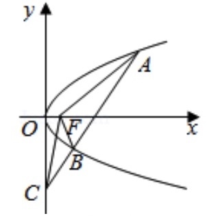

2018-浙江-理-2 【圆锥曲线】
双曲线x23−y2=1的焦点坐标是
A.(−2‾√,0),(2‾√,0)
B.(−2,0),(2,0)
C.(0,−2‾√),(0,2‾√)
D.(0,−2),(0,2)
2017-浙江-理-2 【圆锥曲线】
椭圆x29+y24=1的离心率是
A.13√3
B.5√3
C.23
D.59
2016-浙江-理-7 【圆锥曲线】
已知椭圆C1:x2m2+y2=1(m>1)与双曲线C2:x2n2−y2=1(n>1)的焦点重合,
e1,e2分别为C1,C2的离心率,则
A.m>n且e1e2>1
B.m>n且e1e2<1
C.m<n且e1e2>1
D.m<n且e1e2<1
2016-浙江-理-9 【圆锥曲线】
若抛物线y2=4x上的点M到焦点的距离为10,则M到y轴的距离是()
2015-浙江-理-5 【圆锥曲线】
如图,设抛物线y2=4x的焦点为F,不经过焦点的直线上有三个不同的点A,B,C,
其中点A,B在抛物线上,点C在y轴上,则ΔBCF与ΔACF的面积比是
A.|BF|−1|AF|−1
B.|BF|2−1|AF|2−1
C.|BF|+1|AF|+1
D.|BF|2+1|AF|2+1

2015-浙江-理-9 【圆锥曲线】
双曲线x22−y2=1的焦距是(),渐近线方程是()
2014-浙江-理-16 【圆锥曲线】
设直线x−3y+m=0(m≠0)与双曲线x2a2−y2b2=1(a>b>0)的两条渐近线分别交于
点A,B,若点P(m,0)满足|PA|=PB,则该双曲线的离心率是()